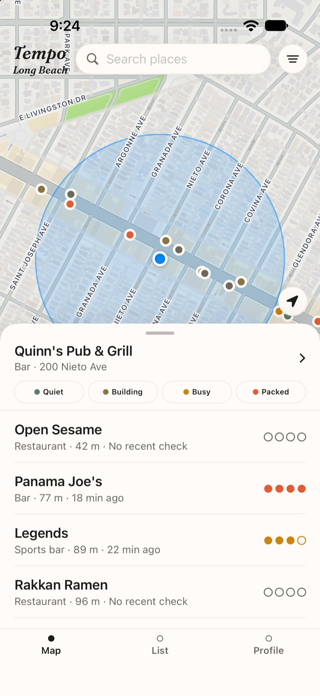
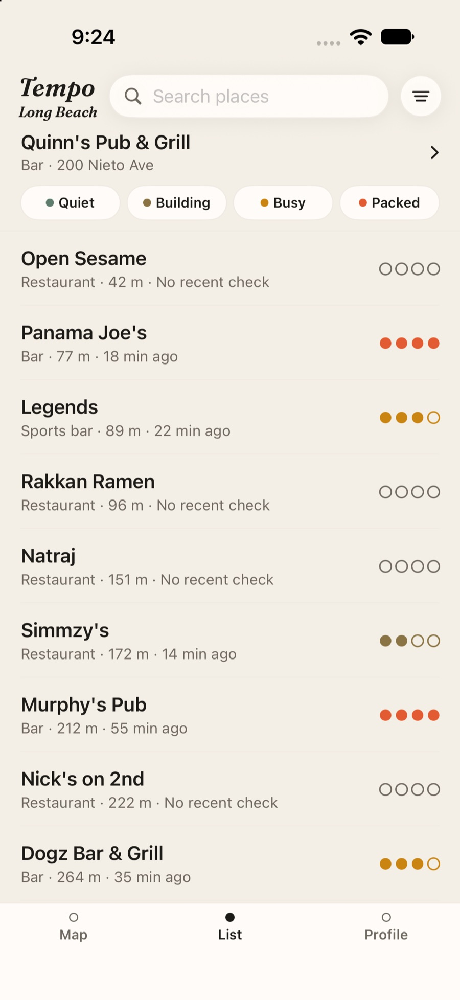
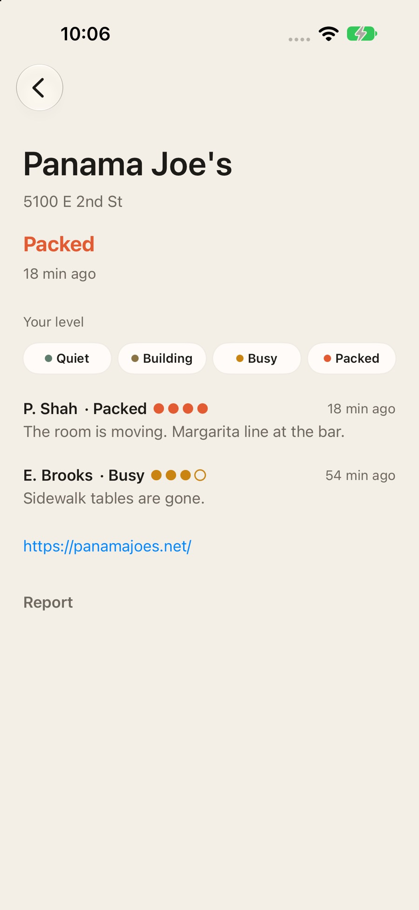

Tempo Check LLC
A live check.
- Quiet
- Building
- Busy
- Packed
No recent check after 90 minutes.
See how busy a place is before you go.
Someone there posts Quiet, Building, Busy, or Packed.
How it goes



When you're there, one tap posts the level. Add a comment if you want.
Filters
Type, hours, and how busy. Nothing selected shows every place.
- Type. Bar, sports bar, club, restaurant, brewery.
- Hours. Open now, including the last hour. Open late is still open and closes before 5 am.
- Busyness. Quiet, Building, Busy, Packed, or no recent check.
On the place, green is open, orange is the last hour, and red is closed.
Bars, sports bars, clubs, restaurants, and breweries.
Coming to Long Beach, downtown Los Angeles, Hollywood, West Hollywood, Westwood, Silver Lake, Echo Park, Koreatown, Studio City, North Hollywood, Northridge, Glendale, Pasadena, Santa Monica, Venice, Culver City, El Segundo, Hawthorne, Manhattan Beach, Torrance, Downey, Anaheim, Irvine, and Fullerton.
For people 21 and over.